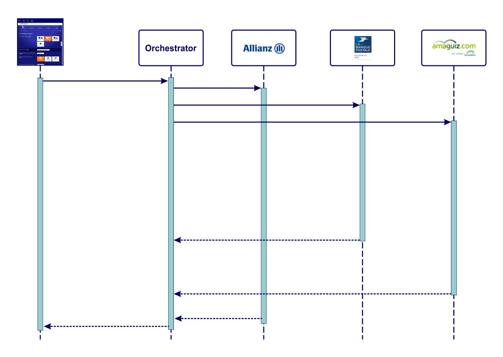
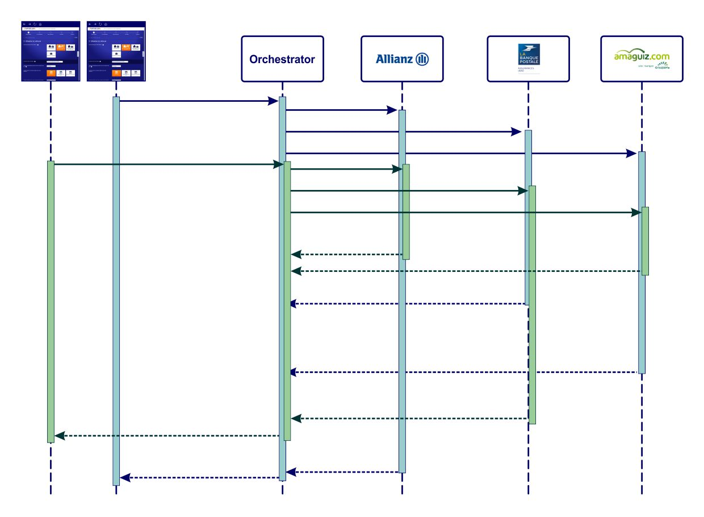
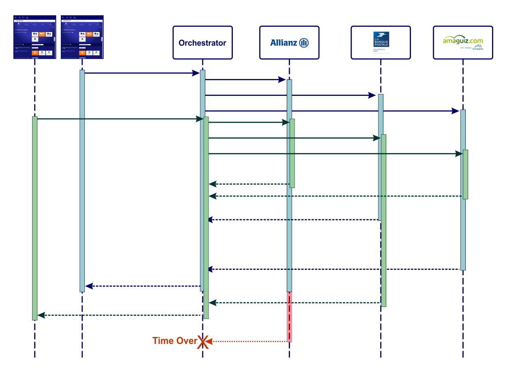
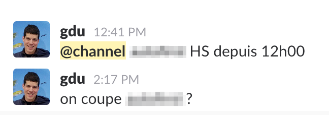
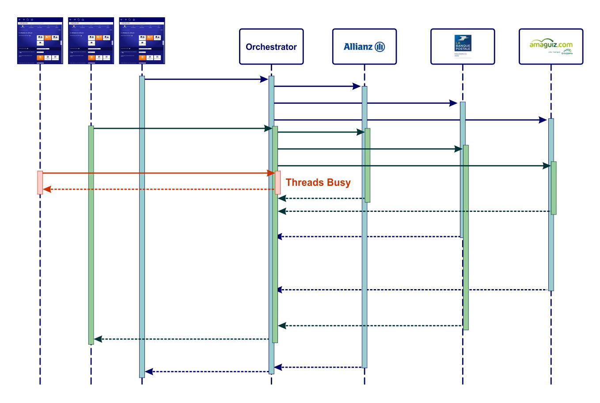
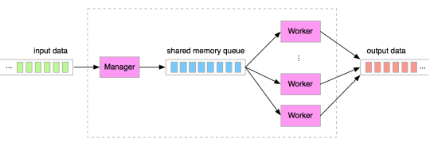
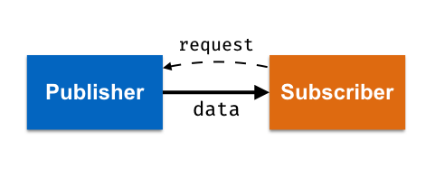
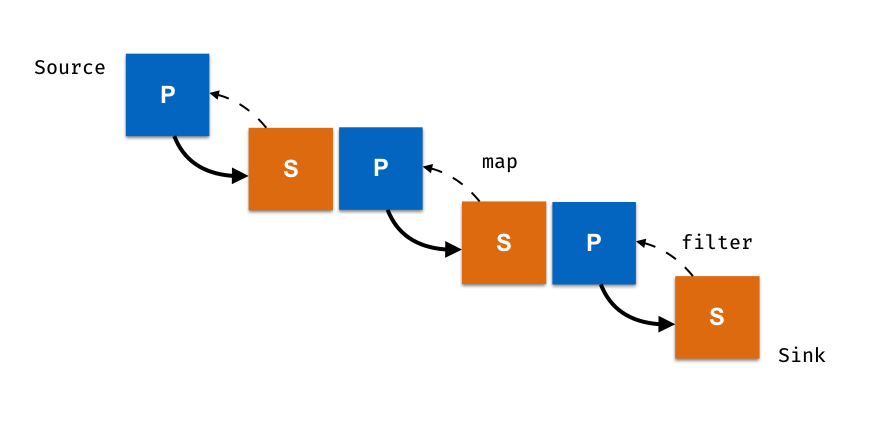

Reactive programming
for service orchestration
on JVM
Ozan Gunalp
Ozan GUNALP
Contributors
- Gilles Di Guglielmo
LesFurets.com
LesFurets.com
- Apache Tomcat Blocking IO
- GWT RPC on Servlet
We are far from being reactive.
Reactive Hype

Let's test this!
Service Orchestrator

Service Orchestrator
Service Orchestrator
Distributed Computing Fallacies
- The network is reliable. NOT
- Latency is zero. NOT
- ...
- There is one administrator. NOT
Service calls fail, a lot.

Time over
Being reactive, on Slack
Clean-er code ?
private Map doQuotation(ResultatTarifications resultat, Control control, List products) {
//...
final List runnables = new ArrayList<>();
try {
prepareRunnables(runnables, projet, resultat, products, control, ...);
long timeOut = control.getConnectionTimeout();
final long startTime = System.currentTimeMillis();
for (OrchestratorRunnable runnable : runnables) {
// .. mapping in, web service call, mapping out
executeRunnable(timeOut, startTime, runnable);
}
waitAll(startTime, getModule(), runnables, timeOut);
logTarificationTimer(runnables, startTime);
postTraitements(resultat);
} catch (Throwable t) {
LOG.error("Error occurs during tarifications " + projet.getOffreUid(), t);
} finally {
checkResultat(resultat);
}
final Map contexts = new HashMap<>();
for (TarificationRunnable runnable : runnables) {
contexts.put(runnable.getProvider(), runnable.getContext());
}
return Collections.unmodifiableMap(contexts);
}
How do we scale?
Thread pool size per endpoint : 2
Buzzy thread pool
if (executor.getActiveCount() >= POOL_SIZE) {
throw new NoExecutorAvailable("ThreadPool buzy");
}
Underlying problems
- Scalability : + resources → + performance
- Resilience : SLA management
- Maintainability : Clean code
Asynchronous execution
- Scalability : distribute tasks to multiple resources
- Resilience : isolation of errors
Mastering concurrency is difficult.
- Thread pool management
- Access to shared state (deadlocks, race conditions)
- Error handling (i.e. timeouts)
- Composing / coordinating async tasks
- Throughput management
- ...

Asynchronous abstractions
- Thread pools and locks
- Message queues with buffering
Synchronous API
public String httpBlockingGet(String url);
ExecutorService
ExecutorService executor = Executors.newCachedThreadPool();
Future<String> http = executor.submit(() -> {
try {
return httpBlockingGet("http://www.lesfurets.com");
} catch (Exception e) {
e.printStackTrace();
return "Error :"+e.getMessage();
}
});
// blocking get
String content = http.get();
Message Queues
Handle changes on throughput with buffering
What if workers can't keep up with events?
java.lang.OutOfMemoryError
Reactive Programming
React to asynchronous
data / events
+
[declarative flow of data transformations]
≠
Reactive Systems
Architectural design pattern for distributed systems
Reactive abstractions
- Event loops with callbacks
- Promise / Future / CompletableFuture
- Reactive Streams
Event Loops

Mono thread + NIO
Asynchronous Callback
public void httpAsyncGet(String url, Handler<String>);
httpAsyncGet("http://www.lesfurets.com", ar -> {
if (ar.succeeded()) {
String content = ar.result();
// do something
} else {
Throwable e = ar.error();
// handle error
}
});
Death by callback
CompletableFuture
CompletableFuture.supplyAsync(() -> {
try {
return httpBlockingGet("http://www.lesfurets.com");
} catch (Exception e) {
return "Error :"+e.getMessage();
}
}, executor)
.thenApply(c -> searchTitle(c))
.thenAccept(s -> {
// use title
});
Error handling
Reactive Streams
Streams != Collections
Collection
Definition of data : Iterable group of items,
definite size
Stream
Definition of work : Operations on group of items,
unbounded size
Streams Java 8
List<QuoteResult> resultList = LongStream.range(0, 11)
.boxed()
.map(l -> new QuoteRequest(l))
.filter(l -> !fromRobot(l))
.map(q -> q.toAnonymousRequest())
.peek(System.out::println)
.collect(Collectors.toList());
Functional programming →
immutability →
no more shared state
Reactive Streams
asynchronous events
+
declarative functions
+
non-blocking back pressure
Back pressure ?
Remember message queues?
Reactive Streams
Pull demand, Push data
Reactive Streams
public interface Publisher<T> {
void subscribe(Subscriber<? super <T> subscriber);
}
public interface Subscriber<T> {
void onSubscribe(Subscription subscription);
void onNext(T item);
void onError(Throwable throwable);
void onComplete();
}
public interface Subscription {
void request(long n);
void cancel();
}
Included in Java 9
java.util.concurrent.Flow
Reactive Streams
- RxJava2
- Spring Reactor
- Vert.x
- Akka Streams
- ...
RxJava
Observables + Operators + Scheduling
Observables
Observable.create(observer -> {
try {
observer.onNext(provider.getQuote());
observer.onComplete();
} catch (Exception e) {
observer.onError(e);
}
});
Observable.defer(() -> Observable.just(provider.getQuote());
Observable.just(1,2,3,4);
Event / Data / Task
Operators
Observable.fromIterable(providers)
.map(p -> p.getQuote())
.filter(q -> !q.hasError())
.subscribe(System.out::println);
Scheduling
Observable.fromIterable(providers)
.subscribeOn(Schedulers.io())
.map(p -> p.getQuote())
.filter(q -> !q.hasError())
.observeOn(Schedulers.from(executorService))
.subscribe(System.out::println);
subscribeOn: on which thread events are created.
observeOn: on which thread events are observed.
Orchestrator
private Map doQuotation(ResultatTarifications resultat, Control control, List products) {
//...
final List runnables = new ArrayList<>();
try {
prepareRunnables(runnables, projet, resultat, products, control, ...);
long timeOut = control.getConnectionTimeout();
final long startTime = System.currentTimeMillis();
for (OrchestratorRunnable runnable : runnables) {
// .. mapping in, web service call, mapping out
executeRunnable(timeOut, startTime, runnable);
}
waitAll(startTime, getModule(), runnables, timeOut);
logTarificationTimer(runnables, startTime);
postTraitements(resultat);
} catch (Throwable t) {
LOG.error("Error occurs during tarifications " + projet.getOffreUid(), t);
} finally {
checkResultat(resultat);
}
final Map contexts = new HashMap<>();
for (TarificationRunnable runnable : runnables) {
contexts.put(runnable.getProvider(), runnable.getContext());
}
return Collections.unmodifiableMap(contexts);
}
Orchestrator parallel stream
QuoteRequest q = ..
ForkJoinPool forkJoinPool = new ForkJoinPool(10);
ForkJoinTask<List<QuoteResult>> submit = forkJoinPool.submit(() ->
providers.stream().parallel()
// map in
.map(p -> p.doReceiveQuote(q))
// map out
)
.collect(Collectors.toList())
);
List<QuoteResult> results = submit.get();
Orchestrator CompletableFuture
private CompletableFuture<QuoteResult> quoteFromProvider(QuoteRequest q, Provider provider) {
return CompletableFuture.supplyAsync(() -> provider.doReceiveQuote(q), executorService)
.thenApply(provider::mapResult)
.completeOnTimeout(new QuoteResult(new TimeoutException("Timeout")),
getTimeout(), TimeUnit.MILLISECONDS)
;
}
Orchestrator CompletableFuture
QuoteRequest q = ..
List<CompletableFuture<QuoteResult>> futures = providers.stream()
.map(provider -> quoteFromProvider(q, provider))
.collect(Collectors.toList());
CompletableFuture<List<QuoteResult>> resultList =
CompletableFuture.allOf(futures.toArray(new CompletableFuture[0]))
.thenApply(v -> futures.stream()
.map(CompletableFuture::join)
.collect(toList()));
List<QuoteResult> rl = resultList.get();
Orchestrator RxJava Observable
private Observable<QuoteResult> quoteFromProvider(QuoteRequest q, Provider p) {
return Observable.just(q)
.map(p::mapRequest)
.map(p::doReceiveQuote)
.map(p::mapResult)
.timeout(getTimeout(), TimeUnit.MILLISECONDS,
Observable.just(new QuoteResult(new TimeoutException("Timeout"))))
.subscribeOn(Schedulers.from(executorService));
}
Orchestrator RxJava Observable
private Observable<List<QuoteResult>> quoteForAllProviders(QuoteRequest q) {
return Observable.fromIterable(providers)
.flatMap(p -> quoteFromProvider(p, q))
.toList()
.toObservable();
}
List<QuoteResult> quotes = quoteForAllProviders(new QuoteRequest()).blockingSingle();
Orchestrator RxJava2 Flowable
private Flowable<List<QuoteResult>> quoteForAllProviders(QuoteRequest q) {
return Flowable.fromIterable(providers)
.flatMap(p -> Flowable.just(q)
.onBackpressureBuffer(1, () -> warn("Buffer Overflow"),
BackpressureOverflowStrategy.DROP_OLDEST)
.observeOn(Schedulers.from(computation))
.map(p::mapRequest)
.map(p::doReceiveQuote)
.map(p::mapResult)
.timeout(getTimeout(), TimeUnit.MILLISECONDS,
Flowable.just(new QuoteResult(new TimeoutException("Timeout"))))
.subscribeOn(Schedulers.from(executorService)))
.toList()
.toFlowable();
}
Orchestrator RxJava2 Processor
Executors.newFixedThreadPool(10);
Scheduler scheduler = Schedulers.from(executor);
PublishProcessor<QuoteResult> processor = PublishProcessor.create();
ExecutorSubscriber<QuoteResult> subscriber = new ExecutorSubscriber<>(executor);
processor
.onBackpressureDrop(quote -> warn("Drop " + quote.getOfferId()))
.observeOn(Schedulers.computation(), false, 5)
.flatMap(q -> Flowable.fromCallable(() -> {
runQuote(q);
return q;
}).subscribeOn(scheduler)
.timeout(1000, MILLISECONDS, Schedulers.computation())
.onErrorReturn(throwable -> {
warn("Error " + throwable);
throwable.printStackTrace();
return q;
})
, false, 10, 5)
.subscribeWith(subscriber);
...
processor.onNext(new QuoteRequest());
subscriber.requestIfNeeded();
waitForCompletion();
Orchestrator RxJava2 Subscriber
class ExecutorSubscriber<T> implements Subscriber<T> {
Subscription s;
ThreadPoolExecutor e;
public void requestIfNeeded() {
if (e.getActiveCount() < 10)
s.request(1);
}
How to manage endpoints?
- Back pressure per endpoint
- Scalable thread pools
- Common thread pool with scaling
- Prioritizing different types of calls
Testing & Benchmarking
TestSubscriber- Reactivity Test Scenarios: Long-term stress, short bursts
- Execution performance: https://akarnokd.blogspot.fr/
Migrating to Reactive Streams
- Encapsulate your good old runnables
- Handle errors & timeouts
- Rewrite runnables in Stream & Return Observables
Best practices & Pitfalls RxJava
subsribeOnandobserveOn- Back pressure
- Debugging
- Using with legacy code
Observable.create()
CompletableFuture
- Managing SLAs : Circuit breaker, Hystrix ?
- Benchmarking Behavior